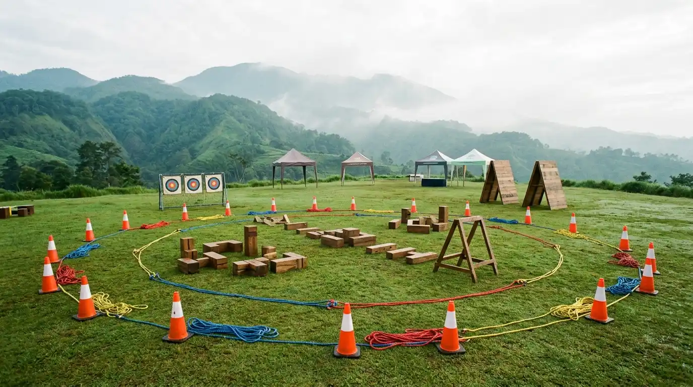
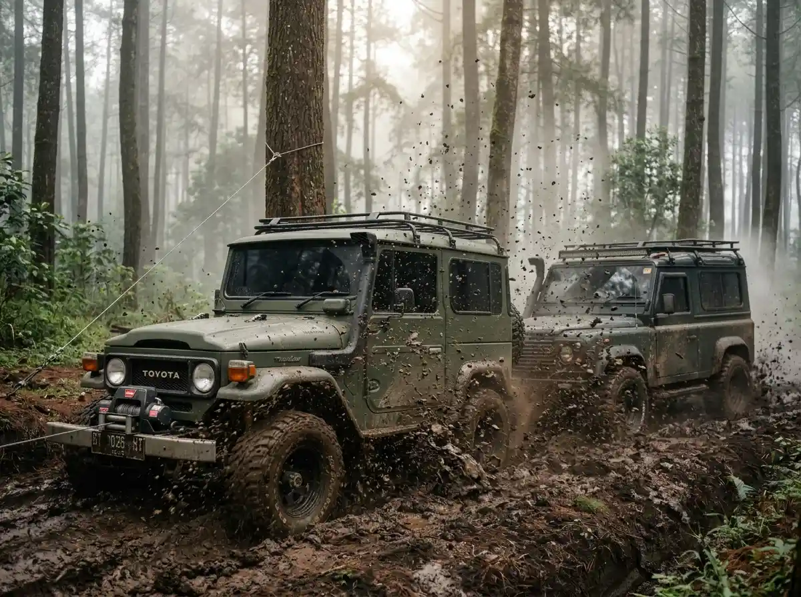
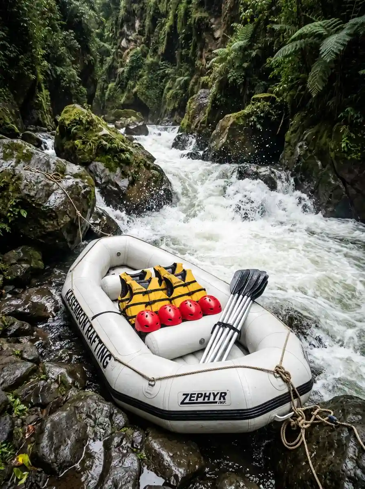

Panduan lengkap merancang corporate gathering 4x4 dan team building yang aman, terukur, dan membekas

Inspirasi rute offroad hutan pinus & lumpur Coban Rondo untuk corporate team building dan gathering tahunan perusahaan.
Ringkasan Panduan Gathering 4x4
Merancang corporate gathering offroad dan team building yang aman serta berdampak tinggi bertumpu pada 5 langkah terukur:
- Mulai dari Tujuan: Tentukan orientasi acara (apresiasi santai vs pembentukan kepemimpinan) sebelum memilih rute.
- Pilih Trek Sesuai Profil: Klasifikasikan rute Green, Blue, atau Red Trail berdasarkan kondisi fisik peserta kantor.
- Standar Keselamatan K3: Pastikan driver berlisensi, inspeksi armada berkala, asuransi outdoor, dan rencana evakuasi darurat.
- Anggaran Transparan: Susun RAB all-in mencakup BBM, retribusi kawasan, konsumsi, dan dokumentasi tanpa biaya tersembunyi.
- Rundown Seimbang: Berikan ruang bernapas, jeda ibadah, dan sesi refleksi debriefing agar hasil kegiatan membekas.
Seminar di ruang rapat mengajarkan teori kerja sama. Lumpur, tanjakan licin, dan mobil yang harus ditarik bersama membuatnya terjadi. Berikut cara merancang gathering 4x4 yang seru sekaligus aman untuk seluruh karyawan.
Kegiatan luar ruang dengan armada 4x4 bukan sekadar rekreasi pemacu adrenalin, melainkan sarana efektif mencairkan sekat komunikasi antar divisi dan menguji kepemimpinan situasional secara nyata di lapangan.
Namun, tanpa perencanaan matang dan standar K3 yang teruji, kegiatan alam terbuka bisa menimbulkan risiko keselamatan atau rasa lelah berlebih bagi peserta non-offroader.
5 Langkah Merancang Gathering 4x4 yang Terukur
1. Mulai dari tujuan, bukan dari rute
Tentukan dulu hasil yang ingin dicapai: mempererat tim baru, menyelesaikan silo antar divisi, atau apresiasi tahunan. Tujuan menentukan porsi permainan fasilitasi dibanding porsi offroad murni.
Untuk apresiasi santai, satu hari fun offroad sudah cukup. Untuk membangun kepemimpinan, dua hari satu malam dengan sesi refleksi memberi hasil yang jauh lebih dalam.
2. Pilih trek sesuai profil peserta
Bukan semua peserta menginginkan lumpur ekstrem. Klasifikasi trek membantu memilih dengan tepat:
- Green Trail: panorama perkebunan apel, goncangan minim, cocok untuk peserta lintas usia dan keluarga.
- Blue Trail: tanjakan curam dan lumpur sedang di hutan pinus, cocok untuk mayoritas gathering kantor.
- Red Trail: mud winch challenge untuk tim lapangan yang mencari adrenalin tinggi dan sudah diedukasi risikonya.
Jika peserta sangat beragam, gabungkan: konvoi Blue Trail di pagi hari, lalu sesi permainan tim yang bisa diikuti semua orang di camp area.
3. Pastikan standar keselamatan sebelum tanda tangan kontrak
Tanyakan hal-hal berikut kepada setiap vendor dan minta jawabannya secara tertulis:
- Apakah driver dan instruktur memiliki sertifikasi resmi, dan bisa dibuktikan dokumennya?
- Bagaimana jadwal inspeksi armada, dan apakah ada checklist kelaikan kendaraan yang bisa dilihat?
- Apakah semua peserta tercakup asuransi kegiatan luar ruang?
- Apa rencana evakuasi medis darurat dan rute alternatif jika cuaca buruk?
- Apakah tersedia komunikasi cadangan (radio VHF/HT) di area blank spot tanpa sinyal seluler?
4. Susun anggaran tanpa kejutan
Minta rincian biaya per peserta yang mencakup armada, BBM, retribusi kawasan, konsumsi higienis, fasilitator berpengalaman, dokumentasi foto/drone, dan asuransi. Vendor yang transparan akan menyebutkan apa yang tidak termasuk. Jika perusahaan Anda memerlukan e-Faktur, SPK resmi, atau termin PO B2B, sampaikan sejak awal agar proses administrasi berjalan lancar.
5. Rancang rundown yang memberi ruang bernapas
Jadwal terlalu padat membuat peserta lelah fisik dan fasilitator terburu-buru. Sisipkan jeda ibadah yang layak, waktu santap siang santai, dan momen foto panorama bersama. Sesi refleksi di akhir hari saat api unggun, ketika peserta masih merasakan tantangan yang baru dilewati bersama, selalu menjadi momen paling membekas.
Ringkasan Klasifikasi Trek dalam Tabel
Berikut adalah perbandingan tiga tingkatan rute offroad untuk mempermudah panitia HR menentukan trek terbaik:
| Tingkat Trek | Karakteristik Jalur | Profil Peserta yang Cocok | Contoh Destinasi |
|---|---|---|---|
| Green Trail | Jalan tanah padat, kebun apel, pemandangan bukit, minim goncangan keras | Peserta lintas usia, wanita hamil muda, gathering keluarga santai | Batu Panderman, Selecta Tea Track |
| Blue Trail | Kubangan lumpur sedang, jalan hutan pinus bergelombang, tanjakan licin | Mayoritas karyawan usia produktif, team building divisi perusahaan | Coban Rondo Batu, Cangar Selecta |
| Red Trail | Lumpur dalam setinggi roda, kemiringan curam, simulasi recovery winch penuh | Tim sales/lapangan, komunitas petualang peminat adrenalin tinggi | Sukamantri Gn. Salak, Trek Kasembon |
Faktor Kunci Keselamatan & Keberhasilan Acara
Jika harus menentukan prioritas, kombinasi antara marshal teknis berlisensi, skrining kondisi fisik peserta sebelum keberangkatan, dan armada terawat dengan perlengkapan recovery lengkap adalah tiga pilar paling menentukan keselamatan.
Jangan tergiur penawaran harga terlampau murah jika vendor tidak mampu menunjukkan bukti polis asuransi dan izin operasional resmi di kawasan konservasi terkait.
Kesimpulan & Rekomendasi
Gathering 4x4 yang dirancang dengan baik bukan sekadar wisata alam, melainkan investasi budaya perusahaan dalam membangun kekompakan, rasa saling percaya, dan daya tahan tim menghadapi tantangan bisnis.
Mulailah dengan briefing transparan, pilih armada yang teruji, dan biarkan alam serta tantangan rute mempererat tim Anda secara alami.
Paket Outbound Terkait untuk Kantor Anda

Corporate Team Building 4x4
Konvoi Selecta, hutan pinus, games kepemimpinan, dan glamping VIP eksklusif.
Detail Paket
Fun Offroad Track Coban Rondo
Trek lumpur ramah pemula, kebun apel Batu, makan siang hutan pinus, dan dokumentasi drone.
Detail Paket
Offroad & Rafting Kasembon
Kombinasi ekspedisi 4x4 hutan karet dan arung jeram Grade 3 sungai Kasembon.
Detail Paket